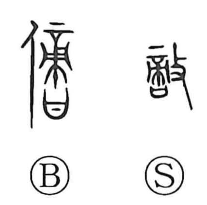

敵

Kun: kataki, kanau | On: teki
enemy ・ opponent ・ rival ・ to oppose ・ to match (as equals)
Explanation
A phono-semantic compound: 商 serves as the phonetic, supplying the on-yomi teki. Shirakawa reads 商 as a form combining 帝, the Supreme Deity, with 口, the covenant vessel that receives written prayers, and takes it to denote a person qualified to recite those prayers—a rightful descendant fit to inherit, the original graph of 嫡. Adding 攴, the hand with a stick meaning “to strike,” turns the whole toward the idea of opposing or striking at that rightful heir, hence “enemy,” “opponent,” or “rival.” From this sense also comes the notion of being a match or equal, as in expressions like hittteki, “to be evenly matched.”